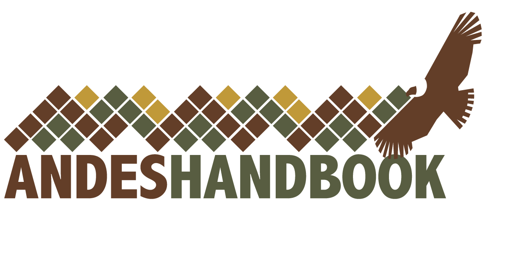

Clínica Universidad de los Andes
Desarrollo del sistema de gestión y control de inventario para el Servicio de Ropa. Permite manejar la ropa clínica, tener control de dónde están las prendas, gestionar el traslado a las diferentes áreas y generar reportes automáticos, de una manera fácil y eficiente.

Andeshandbook
Elaboración de la nueva plataforma web de la Sociedad Geográfica de Documentación Andina. Sistema que permite el registro colaborativo de cientos de montañas y rutas a lo largo de toda la Cordillera de los Andes.

Guías y Scouts de Chile
Miembros del equipo han participado en el desarrollo del sistema de Registro Institucional para los Guías y Scouts de Chile. Plataforma disponible en Web, Android Market y AppStore.